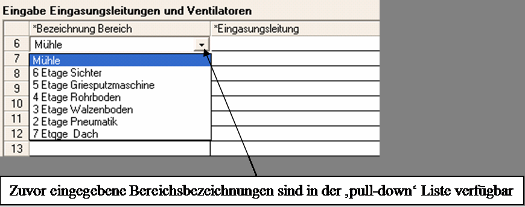
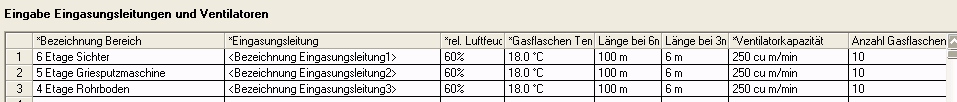
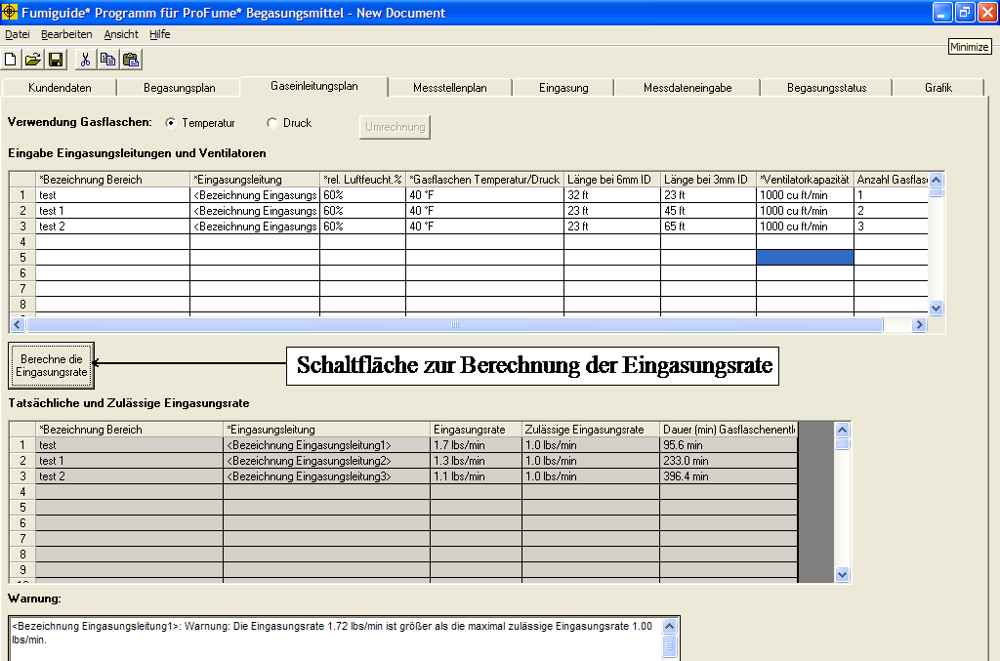
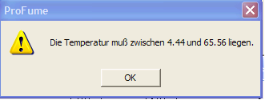
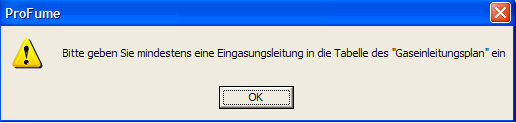
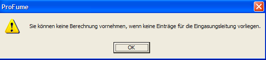
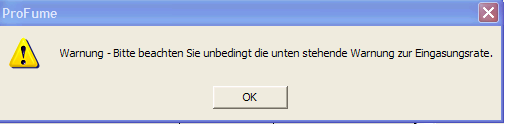
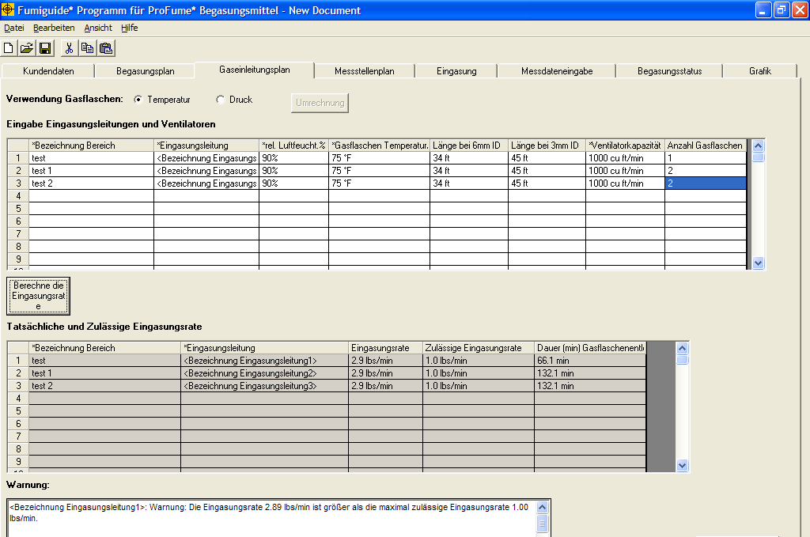

Gaseinleitungsplan-Fenster
Nachdem Sie anhand der Angaben im Begasungsplan-Fenster die benötigte Menge an ProFume berechnet haben, können Sie nun die Einleitung des Begasungsmittels planen. Das Gaseinleitungsplan-Fenster ist das dritte Fenster im ProFume Fumiguide-Programm. Es dient der Eingabe von Eingasungsleitungen, Ventilatoren und der Berechnung der tatsächlichen und zulässigen Eingasungsrate für die verschiedenen Bereiche eines Gebäudes sowie den Zeitbedarf zum Entleeren der Gasflasche(n).
Es wird kein zusätzliches Gas verwendet, um die Gasflasche
unter Druck zu setzen. Jede volle Gasflasche enthält 56,7 kg des Produkts
unter einem temperaturabhängigem Druck von ca. 14 – 20 bar. Die folgende Tabelle
gibt jeweils den Druck bei verschiedenen Temperaturen an.
Gasflaschendruck des Begasungsmittels ProFume bei verschiedenen Temperaturen
|
Temperatur |
Druck | |
| °C |
kPa |
Bar |
|
-17.8 |
490 |
4.9 |
|
-12.2 |
594 |
5.9 |
|
-6.7 |
710 |
7.1 |
|
-1.1 |
849 |
8.5 |
|
4.4 |
1000 |
10.0 |
|
10.0 |
1173 |
11.7 |
|
15.6 |
1366 |
13.7 |
|
21.1 |
1580 |
15.8 |
|
26.7 |
1822 |
18.2 |
|
32.2 |
2090 |
20.9 |
|
37.8 |
2386 |
23.8 |
|
43.3 |
2712 |
27.1 |
|
48.9 |
3072 |
30.7 |
|
54.4 |
3469 |
34.7 |
|
60.0 |
3906 |
39.0 |
|
65.6 |
4389 |
43.9 |
Wählen Sie entweder Gasflaschentemperatur oder Gasflaschendruck um die Zeit (Minuten) zu berechnen, die zum Entleeren der Gasflasche(n) in Verbindung mit einer bestimmten Eingasungsleitung benötigt wird.
Nach Auswahl von Temperatur oder Druck, klicken Sie die Schaltfläche “Umrechnung”. Wenn die Temperatur - Druck Umrechnung nicht durchgeführt wurde, erscheint die unten gezeigte Warnmeldung. Die Umrechnung muß vor allen weiteren Eingaben in den Gaseinleitungsplan vorgenommen werden.

Die im Begasungsplan-Fenster
eingegebenen Bereiche stehen in der Spalte Bereich
als Optionen in einem Pull-Down-Menü zur Verfügung. Wählen Sie den Bereich bzw. die Bereiche aus, in denen Eingasungsleitungen und Ventilatoren platziert werden sollen.


Relative Luftfeuchtigkeit ist der prozentuale Anteil des in der Luft enthaltenen Wassers im Verhältnis zu der Menge, die bei einer 100%igen Sättigung in der Luft enthalten wäre.
Gasflaschen-Temperatur
ist die Temperatur der Gasflaschen. Diese Temperatur lässt sich anhand der
Raumtemperatur schätzen, sofern die Gasflaschen nicht der direkten
Sonneneinstrahlung ausgesetzt sind und ausreichend Zeit hatten, sich an die
Umgebungstemperatur anzupassen. Der gültige Temperaturbereich liegt zwischen
4,4°C und 65,6 °C (40 °F - 150° F).
Gasflaschen-Druck ist der
Druck in der Gasflasche der direkt an einem in der Eingasungsleitung
integrierten Manometer abgelesen werden kann.
Länge bei
6mm ist die Länge der Eingasungsleitung mit einem Innendurchmesser von
6mm (1/4“).
Länge bei
3mm ist die Länge der Eingasungsleitung mit einem Innendurchmesser von
3mm (1/8“).
Ventilatorkapazität bezeichnet den maximalen Luftausstoß eines Ventilators.
Anzahl der
Gasflaschen ist die
Menge an Gasflaschen die an einer bestimmten Eingasungsleitung zusmmengekoppelt
sind.
Wenn alle
Werte eingegeben sind, klicken Sie die Schaltfläche „Berechne die
Eingasungsrate“. Das ProFume Fumiguide-Programm zeigt in der unteren Tabelle die
Tatsächliche und Zulässige Eingasungsrate sowie den Zeitbedarf zum Entleeren der
Gasflasche(n) für jede Eingasungsleitungen an. Diese Begriffe sind wie folgt
definiert:
Eingasungsrate
bezieht sich auf die Anzahl der Kilogramm/Minute (Pfund/Minute) an
Begasungsmittel, die bei einer bestimmten Gasflaschen-Temperatur und bestimmten
Werten für Innendurchmesser und Länge der Eingasungsleitung in den zu begasenden
Raum eingeleitet werden. Zulässige Eingasungsrate ist die
maximal zulässige Freisetzungsrate (Menge / Zeiteinheit siehe oben) von Begasungsmittel zur Vermeidung von Nebelbildung in dem zu begasenden Raum.






Eine
Warnmeldung wird angezeigt, wenn die Tatsächliche Eingasungsrate die Zulässige
Eingasungsrate überschreitet. Der Anwender muß diese Warnmeldung bestätigen,
bevor er die nächsten Schritte vornehmen kann.
Die
Tatsächliche Eingasungsrate kann auf die Zulässige Eingasungsrate eingestellt
werden indem die Ventilatorenleistung erhöht, die Eingasungsleitung verlängert,
der Innendurchmesser der Eingasungsleitung verringert oder alle Maßnahmen
kombiniert umgesetzt werden.